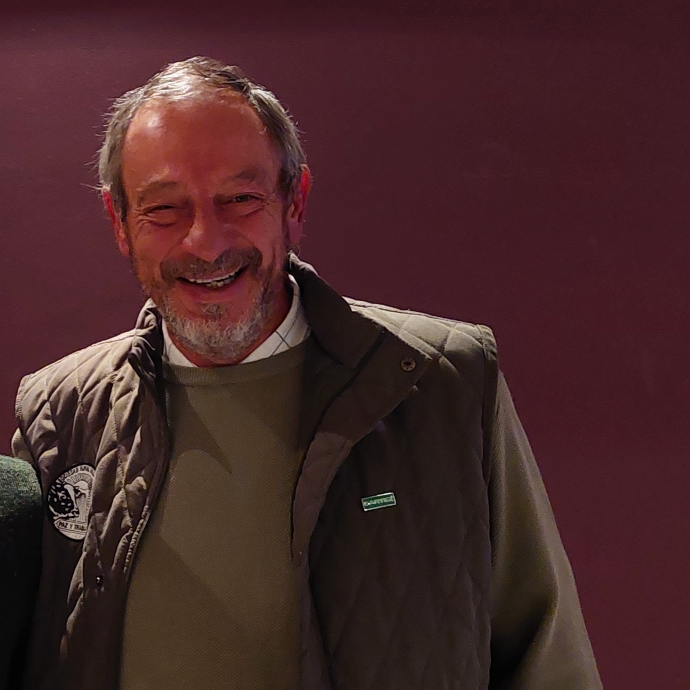

INSTITUCIONAL
¿Quiénes somos?
CARTEZ es la Confederación de Asociaciones Rurales de la Tercera Zona, acompañando al productor de cerca, trabajando sobre las realidades productivas que nuclean las provincias de Córdoba, Catamarca, La Rioja, y el Sur de San Luis.
Nuestra entidad reúne a cada productor rural que desee ser escuchado, trabajando y apostando al crecimiento del complejo agro-industrial de nuestra Argentina, desde nuestras Sociedades Rurales y Asociaciones de Productores.
Mesa Ejecutiva 2023-2025
Presidente
Patricio Kilmurray
Vicepresidente primero
Carlos Cavadore
Vicepresidente segundo
Ariel Cadamuro
Secretario
Federico Proietti

Prosecretario
César Coassolo
Secretario gremial
Sebastián Laborde
Tesorera
Laura Mensa
Protesorero
Miguel Pussetto